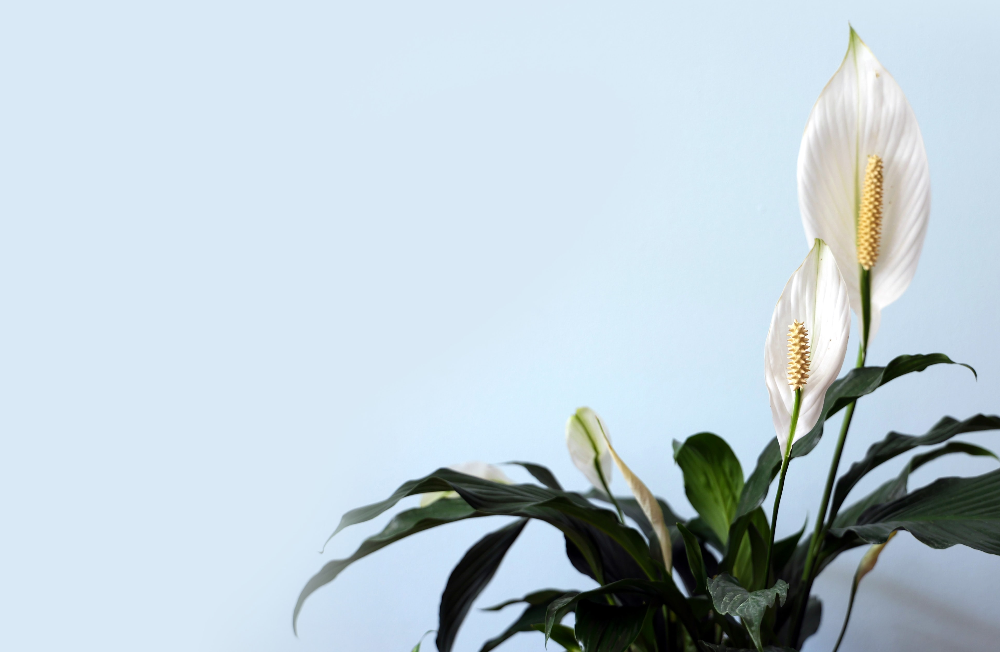

- 테이블야자
- 스파티필름
- 몬스테라
스파티필름
요약
스파티필름은 상록 여러해살이풀로서 열대 아메리카·동남아시아에 30종 정도가 자란다.

내용
높이는 약 1 m이다. 잎은 상록이고 뭉쳐나며 잎자루에는 긴 잎집이 있다. 꽃은 양성화로서 육수꽃차례에 달린다. 꽃자루가 길고 화피는 통 모양이며 보통 4∼6개의 화피갈래조각이 있다. 독특한 향기가 있고 흰색이며 매우 아름답다. 꽃차례에는 흰색 또는 녹색의 아름다운 불염포가 오랫동안 붙어 있다.
대표적인 품종은 다음과 같다.
① 파티니이(S. patinii): 원산지는 확실하지 않으며 한국에서 흔히 재배한다. 높이 40∼50 cm 정도로 자라며 무리 지어 난다. 잎은 혁질(革質:가죽 같은 질감)로서 긴 타원 모양 바소꼴이며 길이 약 20cm, 나비 8cm 정도이다. 불염포는 길이 8∼10 cm로서 흰색이다. 그늘진 곳에서도 잘 자란다.
② 칸니폴리움(S. cannifolium): 남아메리카 북부와 트리니다드토바고 원산이다. 원예종이 많으며 높이 80∼100 cm 정도이다. 땅속줄기가 자란 것으로서 무리지어 난다. 잎은 두껍고 길이 30∼50 cm, 나비 10∼18 cm이며 잎자루와 같은 길이이다. 추위에는 약하나 그늘에서도 자란다.
③ 플로리분둠(S. floribundum): 콜럼비아 원산이다. 높이 약 30 cm이다. 왜성종으로서 잎은 빽빽이 나나 무리를 이루지 못하고 생장도 더디다. 잎은 타원 모양으로서 둥그스름하며 혁질이다. 잎은 길이 15∼20 cm, 나비 8 cm 정도이다. 불염포는 넓은 달걀 모양이며 육수꽃차례로 달린다. 향기가 강하고 열매를 잘 맺는다. 번식은 종자로 한다.
④ 왈리시(S. wallisii): 중앙 아메리카가 원산지인 상록다년초다. 최대 90 cm까지 자라며 10~12 cm의 타원형 불염포를 가지고 있다. 불염포는 흰색이나 나이가 들면 녹색을 띤다. 광택이 있는 잎은 약 60 cm까지 자라며 타 종보다 큰 편이다. 마우나로아(mauna loa), 센세이션(sensation), 도미노(domino)를 비롯한 다양한 원예 품종의 모태가 되었다. 상업적으로 가장 많이 이용되고 있는 대형 원예종인 마우나로아는 미항공우주국(NASA)의 공기정화식물 실험을 거친 원예종으로 벤젠, 폼알데하이드, 트릴클로로에틸렌, 크실렌, 톨루엔, 암모니아, 아세톤 등의 제거 능력이 특히 매우 뛰어나 공기 정화 식물로도 인기가 많다.